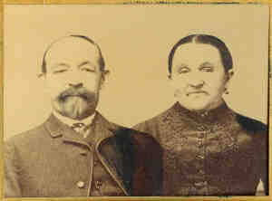

| 
Michael STAMM (1823-1911) |
Michael STAMM 455,3742
Cause of his death was myocarditis.3744 General Notes: Family legend described him as a soldier (officer?) in Germany (probably Prussia). He was involved in a plot to overthrow the Kaiser and the aristocracy and set up a republic. He also had rejected the Catholic faith and his family made him leave home (Stamm Castle/Schloss in Prussia?). Noted events in his life were: • Alt. Birth, Oct 1826, , , , Germany. 3742 • Immigration, 1860, , , , United States. 3742,3743 • Census, 19 Jul 1870, Highland, Madison Co., Illinois. 3739 • Occupation: tailor, 19 Jul 1870, Highland, Madison Co., Illinois. 3739 • Census, 1880, Highland, Madison Co., Illinois. 3740 • Occupation: tailor, 1880, Highland, Madison Co., Illinois. 3740 • Census, 9 Jun 1900, Saint Louis, St. Louis City, Missouri. 3742 • Occupation: tailor, 9 Jun 1900, Saint Louis, St. Louis City, Missouri. 3742 • Census, 18 Apr 1910, Saint Louis, St. Louis City, Missouri. 3743 • Occupation: tailor or coat-maker, 18 Apr 1910, Saint Louis, St. Louis City, Missouri. 3743 Michael married Wilhemina SEEGER on 3 Jan 1861 in , Madison Co., Illinois.3741 (Wilhemina SEEGER was born about 1826 in , , , Switzerland 3527,3740 and died before 18 Apr 1910 3743.) |
|
only search Stockdale Coddington Genealogy |
Table of Contents | Surnames | Name List
This website was created 9 Apr 2025 with Legacy 10.0, a division of MyHeritage.com; content copyrighted and maintained by coddgenealogy at gmail d0t com